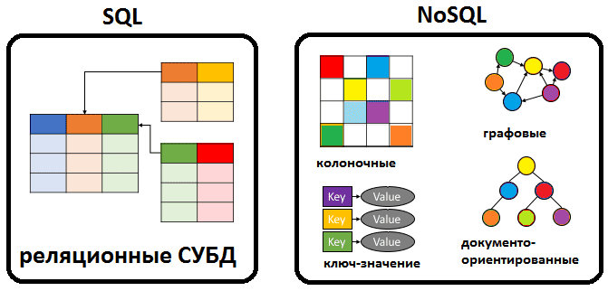
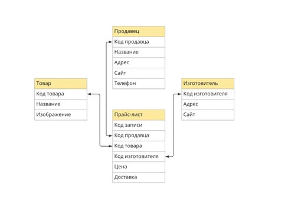

Базы данных: фундаментальные основы, типы и применение
Введение
База данных (БД) — это имеющая название совокупность данных, которая отражает состояние объектов и их отношений в рассматриваемой предметной области. Базы данных являются фундаментальным компонентом современных информационных систем и используются практически во всех сферах человеческой деятельности.
Данными называют зарегистрированную информацию, представление фактов, понятий или инструкций в форме, которая подходит для передачи, связи, обработки человеком или с помощью машины. Содержимое базы данных может включать прайс-листы, контакты пользователей, каталоги товаров, отчеты, статистику продаж и многое другое.
В современном мире базы данных играют ключевую роль в обеспечении работы различных систем и приложений, от мобильных приложений до крупных корпоративных систем. Они позволяют эффективно хранить, искать и обрабатывать информацию, что делает их незаменимыми в эпоху информационных технологий.
Фундаментальные свойства баз данных
Из определения базы данных следует, что в ней:
-
Всегда есть имя. Если имя не задано, то нет и базы данных.
-
Фиксируется состояние объектов и их отношений в заданный момент времени. Со временем оно меняется. Например, цена товара может характеризовать его состояние. Вслед за изменением цены меняется и состояние товара.
-
Фиксируется информация об объектах из определенной предметной области. Например, если рассматриваем предметную область «Библиотека», то в базе могут фиксироваться данные по книгам, их расположению в библиотеке, читателям и читательским билетам. Если предметная область — «Магазин», то в БД может находиться информация по товарам и их ценам, по торговым точкам и наличию товара в конкретной торговой точке.
Важной характерной чертой БД является ее постоянство. Оно проявляется в нескольких контекстах:
- Данные постоянно накапливаются и используются.
- Состав и структура данных обычно постоянны и стабильны во времени. Если они меняются, то скорее всего БД находится в процессе проектирования и разработки.
- Элементы данных могут меняться (вслед за изменением состояний объектов и их отношений). Тем самым информация, которую содержит каждая база данных, постоянно актуализируется.
Отличия баз данных от электронных таблиц
Электронные таблицы изначально создавались как однопользовательские — полный контроль для одного пользователя и ограниченный набор функций для нескольких. Набор данных, как правило, невелик, как и количество вносимых изменений.
БД предусматривают работу с большим объемом упорядоченной информации. Также в отличие от таблиц базы данных предназначены для работы нескольких пользователей, которые вносят изменения одновременно, независимо друг от друга.
Классификация баз данных

Существует множество критериев классификации баз данных. Рассмотрим основные из них:
1. По форме представления информации
- Фактографические: Данные представлены в виде фактов об объектах предметной области в формате пар «параметр — значение». Пример: БД интернет-магазинов.
- Документальные: Данные представлены в виде полнотекстовых документов. Пример: БД новостных сайтов.
- Мультимедийные: Данные представлены в виде графического, аудио- или видеоконтента. Пример: БД видеохостингов.
2. По типу используемой модели данных
Реляционные базы данных
Реляционные базы данных — самый распространенный тип баз данных. В них данные организованы в виде таблиц (отношений), состоящих из строк и столбцов. Каждая строка представляет собой запись, а каждый столбец — атрибут или поле.
Наиболее известными реляционными базами данных являются: - PostgreSQL - MySQL - SQLite - Oracle - Microsoft SQL Server - IBM Db2
Реляционные СУБД бывают с хранением данных: - По строкам (PostgreSQL): лучше подходят для транзакционных нагрузок - По столбцам/колонкам (ClickHouse, Vertica): лучше подходят для аналитики

Нереляционные (NoSQL) базы данных
Нереляционные базы данных используют структуры, отличные от таблиц, для хранения данных. Они подразделяются на несколько типов:
Базы данных типа "ключ-значение" (Key-Value)
Тип баз данных Key-value предназначен для осуществления быстрых, почти мгновенных запросов для таких задач как кэш, отображение баланса и т.д. Высокая скорость осуществляется за счет хранения данных по принципу ключ-значение, и в большинстве случаев благодаря работе в оперативной памяти.
Словари содержат коллекцию объектов или записей, а объекты содержат множество различных полей, каждое из которых содержит данные. Записи хранятся и извлекаются с использованием ключа, который однозначно идентифицирует запись и используется для быстрого поиска данных.
Наиболее известными Key-Value решениями являются Redis и Memcached.
Документо-ориентированные базы данных
Документо-ориентированные базы данных хранят данные в виде документов, обычно в формате JSON или BSON. Каждый документ содержит пары ключ-значение, но, в отличие от баз данных типа "ключ-значение", значения могут быть сложными структурами данных.
Примеры: MongoDB, CouchDB, Firestore.
Графовые базы данных
Графовые базы данных используются для хранения данных о сетевых структурах, таких как социальные сети, карты дорог или сети поставок. Они хранят узлы (сущности) и ребра (отношения между сущностями).
Примеры: Neo4j, Amazon Neptune, ArangoDB.
Поисковые базы данных (Search Engines)
Поисковые базы данных оптимизированы для поиска текста и обработки естественного языка. Они используются для создания поисковых систем и анализа текста.
Примеры: Elasticsearch, Solr, Algolia.
3. По топологии хранения
- Локальные: Размещены на одной машине.
- Распределенные: Размещены на нескольких машинах.
4. По функциональному назначению
- Операционные: Большую часть времени используются для операций записи (добавление, изменение, удаление данных). Пример: БД 1С.
- Справочно-информационные: Большую часть времени используются для операций чтения. Пример: БД справочно-правовых систем.
Специализированные типы баз данных
1. Объектно-ориентированные базы данных
Объектно-ориентированные базы данных хранят данные в виде объектов, как в объектно-ориентированном программировании. Они позволяют хранить сложные структуры данных и отношения между ними.
Примеры: Db4o, ObjectDB.
2. Векторные базы данных
Векторные базы данных оптимизированы для хранения и поиска векторных представлений данных, что особенно важно для приложений машинного обучения и искусственного интеллекта.
Примеры: Pinecone, Milvus, Weaviate.
Связь таблиц по ключу
Одним из фундаментальных аспектов реляционных баз данных является связь таблиц по ключу. Это механизм, который позволяет устанавливать отношения между данными в разных таблицах.
Типы ключей
Первичный ключ (Primary Key)
Первичный ключ — это столбец или комбинация столбцов, которые однозначно идентифицируют каждую строку в таблице. Первичный ключ должен быть уникальным и не может содержать значения NULL.
Пример:
Составной ключ (Composite Key)
Составной ключ — это первичный ключ, состоящий из двух или более столбцов.
Пример:
CREATE TABLE OrderItems (
OrderID INT,
ProductID INT,
Quantity INT,
PRIMARY KEY (OrderID, ProductID)
);
Уникальный ключ (Unique Key)
Уникальный ключ — это столбец или комбинация столбцов, которые должны содержать уникальные значения, но, в отличие от первичного ключа, могут содержать значения NULL.
Пример:
CREATE TABLE Users (
UserID INT PRIMARY KEY,
Username VARCHAR(50) UNIQUE,
Email VARCHAR(100) UNIQUE
);
Внешний ключ (Foreign Key)
Внешний ключ — это столбец или комбинация столбцов, которые ссылаются на первичный ключ другой таблицы. Внешний ключ устанавливает связь между таблицами и обеспечивает целостность данных.
Пример:
CREATE TABLE Orders (
OrderID INT PRIMARY KEY,
CustomerID INT,
OrderDate DATE,
FOREIGN KEY (CustomerID) REFERENCES Customers(CustomerID)
);
Типы связей между таблицами
Один к одному (One-to-One)
Связь "один к одному" означает, что одна запись в первой таблице соответствует только одной записи во второй таблице, и наоборот.
Пример: Таблица "Сотрудники" и таблица "Паспортные данные". У каждого сотрудника есть только один паспорт, и каждый паспорт принадлежит только одному сотруднику.
Один ко многим (One-to-Many)
Связь "один ко многим" означает, что одна запись в первой таблице может соответствовать нескольким записям во второй таблице, но каждая запись во второй таблице соответствует только одной записи в первой таблице.
Пример: Таблица "Клиенты" и таблица "Заказы". Один клиент может сделать несколько заказов, но каждый заказ принадлежит только одному клиенту.
Многие ко многим (Many-to-Many)
Связь "многие ко многим" означает, что одна запись в первой таблице может соответствовать нескольким записям во второй таблице, и наоборот.
Пример: Таблица "Студенты" и таблица "Курсы". Один студент может посещать несколько курсов, и один курс может посещать несколько студентов.
Для реализации связи "многие ко многим" обычно используется промежуточная таблица, которая содержит внешние ключи, ссылающиеся на первичные ключи связываемых таблиц.
CREATE TABLE Students (
StudentID INT PRIMARY KEY,
Name VARCHAR(100)
);
CREATE TABLE Courses (
CourseID INT PRIMARY KEY,
Title VARCHAR(100)
);
CREATE TABLE StudentCourses (
StudentID INT,
CourseID INT,
PRIMARY KEY (StudentID, CourseID),
FOREIGN KEY (StudentID) REFERENCES Students(StudentID),
FOREIGN KEY (CourseID) REFERENCES Courses(CourseID)
);